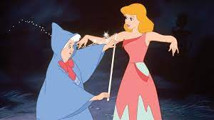

Once upon a time, there was a beautiful girl named Cinderella. She used to live with her stepmother, stepsisters, and her father. Her father used to stay out of the town on business, and her own mother died long ago. The behaviour of the stepmother and stepsisters towards Cinderella was very mean and self-centred, and they used to make her do all the household chores, like cleaning the house, cooking, ironing clothes, etc.Stepmother used to boss her and give her orders all the time, “why are you sitting, Cinderella? Who will make the preparations for the dinner? You need to clean my room also after that.”
Even stepsisters used to make her do their work too, and they used to create unnecessary complaints
about Cinderella to their mother so that she would ask her to do extra work.“She needs to arrange our room’s Mumma, and she has not put laces to my new dress also,†said one of the stepsisters.However,Cinderella, being a kind-hearted girl, never replied back and kept doing all the work in silence. Days passed and turned into years, but her miseries never ended.
One day, everyone in the town got an invitation from the palace for the royal ball. The king and queen wanted their son to choose his wife and future queen; therefore, everyone was invited.
The invitation read like, †The king and queen request the honour of your presence at the Royal Ball. The king wants to choose the bride for the prince, and the future king. Be there with your family to have a gala time.”
The letter reached Cinderella’s house too.
Cinderella’s stepmother instantly ordered Cinderella to design beautiful ball gowns for her and her daughters.
Cinderella thought in her mind, “I will make beautiful gowns for everyone. I hope mama will take me along too.”
But, on the final day, the stepmother and stepsisters gave her more household work to complete and at last left her home, citing her incompetence in finishing the work on time as the reason.“We are getting late, Cinderella. You cannot do one work on time. Right now, you cannot come with us as there is so much left to do,†said the stepmother.
Her stepsisters also secretly tore her dress to add to her agony.Left alone in the house, sad Cinderella cried and said, seeing the sky, “Dreams never come true, never.”
At the same time, a fairy appeared before her and said, “Don’t be afraid, my child; I am your fairy godmother. I know you want to join others at the royal ball, and I can make it happen, my dear.†
She waved her magic wand and converted Cinderella’s torn dress into a beautiful gown. She transformed a nearby pumpkin into a colossal coach and turned six rats into four horses to pull the coach and the driving coachmen. She also gave her a beautiful pair of glass slippers matching her dress. Now, Cinderella was all set to join the others.
Cinderella was so thankful and said,†thank you fairy godmother.
Now, I can join my sisters and enjoy the ball.”But before she left, the fairy godmother gave her one warning, “My dear, you need to be back before midnight because my magic won’t work after that. You will be back in your original look.”
Cinderella nodded yes and left for the ball to join the others.
At the party, everyone was stunned to see Cinderella, as she was the most beautiful girl at the ball. The prince fell in love the moment he laid eyes on her. He instantly came and asked her to dance with him.
He said, “I have not seen anyone more beautiful than you. Will you care for a dance with me.”
It was like a dream come true for Cinderella. She said yes instantly.
All the girls, including her stepsisters, were jealous of her. The prince and Cinderella conversed and danced the entire night until she realised the clock was reaching midnight. She rushed back home, leaving the prince in dismay. The prince ran after her but in vain. As she was rushing back, one of her glass slippers dropped on the stairs of the palace.
The next day, the prince decided to search the entire kingdom for the girl who would fit the glass slipper as he wanted to marry that girl.
“Search every house and find me the girl whose foot will fit inside this slipper, as she would be my bride for life,” said the prince.
The soldiers searched all the houses one by one but in vain. At last, they knocked on Cinderella’s house. They asked the stepsisters and Cinderella to wear the shoes one by one. The evil stepsisters tried hard to squeeze their feet inside the slipper but were useless. Then it was Cinderella’s chance to try the shoe, which was the perfect fit. The prince was called and immediately recognised Cinderella from the ball night.
Prince said, ” I was looking for you everywhere. Why did you leave me like this? Now, I will not let you go. Will you marry me?”
Ecstatic Cinderella said yes instantly. Later, they got married in a grand ceremony and lived happily ever after.